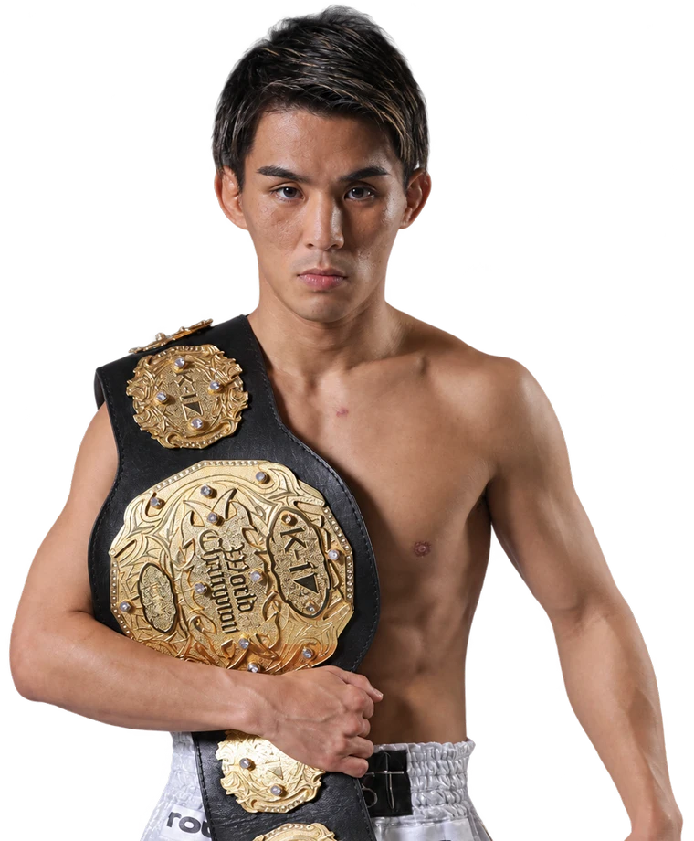

代表
堀越 逸豊
東松山市出身。2019年に極真空手道 忍會 / REVIVEを設立。ふじみ野を拠点に、上福岡教室と東松山道場へ活動を広げています。
主な戦績
- 2019年 拳武チャレンジ 上級無差別・型 優勝
- 新極真ドリームフェスティバル 2022年・2023年 優勝
INSTRUCTORS
忍會の稽古を支える指導員。
代表
東松山市出身。2019年に極真空手道 忍會 / REVIVEを設立。ふじみ野を拠点に、上福岡教室と東松山道場へ活動を広げています。

師範代
茨城県土浦市出身。道場の指導員紹介では、ふじみ野本部で空手とキックボクシングを指導。